k8s 网络模型
"网络栈"包括网卡，回环设备，路由表，iptables规则。
二层网络：根据 MAC地址表进行数据包的转发；
三层网络：通过 IP 路由实现跨网段的通讯；
网络系统的的四个主要问题：
- 高度耦合的容器间通信：这个已经被 Pod 和
localhost通信解决了。 - Pod 间通信：这是本文档讲述的重点。
- Pod 与 Service 间通信：涵盖在 Service 中。
- 外部与 Service 间通信：也涵盖在 Service 中。
CNI
Container Network Interface
- Weave、Calico、Flannel、Canal、Romana、kube-router 等实现。
- K8s 1.24 版本及以后， CNI 的管理不再是 kubelet 的工作。
CNI 网桥：接管K8s创建的Pod
- 基础可执行文件在
/opt/cni/bin目录下；
CNI插件：
- ADD操作：将容器添加到 CNI 网络里；
- DEL操作：从 CNI 网络里移除容器；
每一个Pod都拥有一个扁平化共享网络命名空间的「PodIP」。
- 通过PodIP跨越网络与其他物理机和Pod进行通信。
- IP-Per-Pod 模型创建了一个干净的、反向兼容的模型。
该模型中，从端口分配、网络、域名解析、服务发现、负载均衡、应用配置和迁移等角度，Pod都能被看作是虚拟机或者物理机，应用可以平滑地从非容环境迁移到同一个Pod内的容器环境。
Pod内通信
Pod：Pod是容器的集合；
- Pod包含的容器都运行在同一个宿主机，拥有相同网络空间，容器之间可以互相通信；
- Pod运行的容器中包含业务容器和网络容器 「pause」；
- 「pause」全称infrastucture container（又叫infra）基础容器。
- 网络容器只用来接管Pod的网络，业务容器通过加入网络容器的网络实现网络共享
Pod内容器类似使用以下命令运行：
docker run -p 80:80 -p 8080:8080 --name network-container -d gcr.io/google_container/pause:3.1
docker run --net container:network-container -d jonlangemak/docker:web_container_8080
Pod中的容器网络拓扑
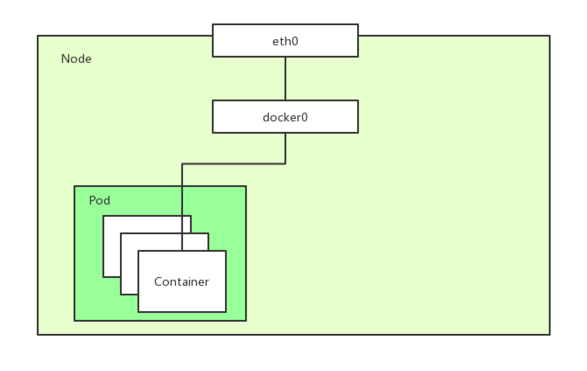
Pod间通信
k8s网络模型是一个扁平化的网络平面，Pod作为一个网络单元同k8s Node网络处于一个层级
示例：最小的k8s网络拓扑
- Pod间通信：Pod1和Pod2（同主机）， Pod1和Pod3（跨主机通信）
- Node与Pod间通信：Node1与Pod1/Pod2（同主机），Pod3（跨主机能够通信）
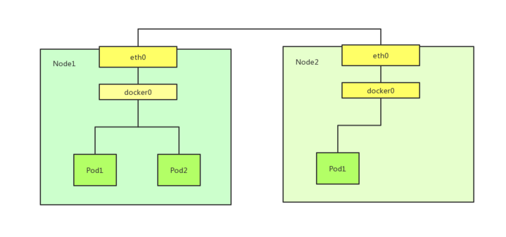
问题：
- 如何保证Pod的PodIP是全局唯一的？
- Pod的PodIP是Docker网桥分配的，所以将不同 k8s Node的Docker网桥配置成不同的IP网段即可。
- 同一个k8s Node上的Pod/容器原生能通信，不通Node之间的Pod如何通信？
- 对Docker进行增强，在容器集群中创建一个覆盖网络（Overlay Network），联通各节点，如Flannel ，Calico；
- Overlay Network 本身，可以由每台宿主机上的一个“特殊网桥”共同组成 或者 通过配置宿主机的路由表实现；
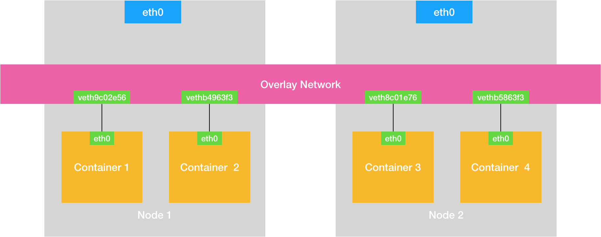
Flannel 网络模型
Flannel 是由 CoreOS 团队设计的覆盖网络工具
- UDP模式：性能最差，已废弃；
- VXLAN模式：
- HOST_GW模式：
UDP
- Flannel为主机设定一个子网，通过隧道协议封装容器之间的通信报文，实现容器的跨主机通信。
- Flannel会为每一台宿主机分配一个“子网”，一台宿主机上的所有容器，都属于这个“子网”，即都属于同一个网段，子网与宿主机的对应关系，保存在 Etcd
$ etcdctl ls /coreos.com/network/subnets
/coreos.com/network/subnets/100.96.1.0-24
/coreos.com/network/subnets/100.96.2.0-24
/coreos.com/network/subnets/100.96.3.0-24
# 子网对应的宿主机的 IP 地址
$ etcdctl get /coreos.com/network/subnets/100.96.2.0-24
{"PublicIP":"10.168.0.3"}
-
配置完成，每个上运行
flanneld进程，创建一个叫做flannel0的设备，添加一系列的路由规则，用来指定数据包的下一跳 -
flannel0 设备是一个TUN 设备（Tunnel 设备），TUN 设备是一种工作在三层的虚拟网络设备；
- TUN设备：在操作系统内核和用户应用程序之间传递 IP 包。而添加的路由规则则包含了流入flannel0 设备和流出flannel0 设备的路由。
网络流转：
- 当 IP 包从容器经过 docker0 出现在宿主机后，就会根据路由表进入 flannel0 设备；
- 宿主机上的 flanneld 进程就会收到这个 IP 包，根据这个 IP 包的目的地址，匹配到对应的子网，从 Etcd 中找到这个子网对应的宿主机的 IP 地址；
- flanneld将这个IP包直接封装在一个 UDP 包里，通过物理网络发送给目的宿主机的 flanneld（监听8285 端口）；
- 目的宿主机的flanneld 就可以从这个 UDP 包里解析出封装在里面的源容器发来的原 IP 包，直接把这个 IP 包发送给它所管理的 TUN 设备；
- Linux内核会根据路由规则，把这个 IP 包转发给 docker0 网桥（作为二层交换机），将数据包发送给正确的端口，进而通过 Veth Pair 设备进入到目的容器里
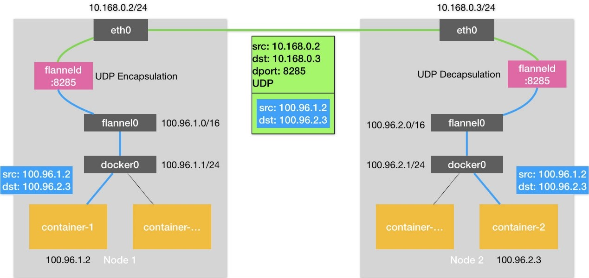
总结：
-
工作在三层的overlay网络；
-
在发出 IP 包的过程，需要三次用户态与内核态之间的数据拷贝；
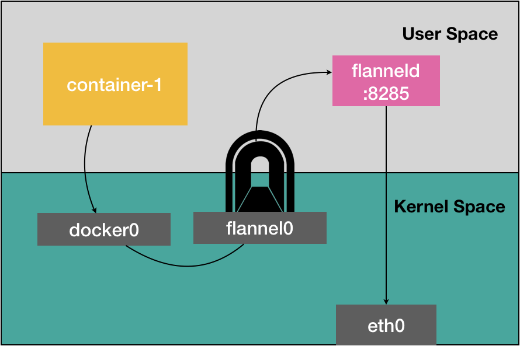
VXLAN
VXLAN即Virtual Extensible LAN（虚拟可扩展局域网），是 Linux 内核本身就支持的一种网络虚似化技术。
- 在现有的三层网络之上，“覆盖”一层虚拟的、由内核 VXLAN 模块负责维护的二层网络，使得连接在这个 VXLAN 二层网络上的“主机”（虚拟机或者容器都可以）之间，像在同一个局域网（LAN）里那样自由通信；
- 在宿主机上设置一个特殊的网络设备 VTEP，即：VXLAN Tunnel End Point（虚拟隧道端点）
- 内核里完成对二层数据帧进行封装和解封装；
Flannel 的流程：
- 在各节点上添加相应的路由规则，用来指定数据包的下一跳；
- 维护一个ARP表，存储各节点的VTEP设备的MAC地址；
- 维护一个FDP转发数据库，存储各VTEP设备所在的宿主机ip；
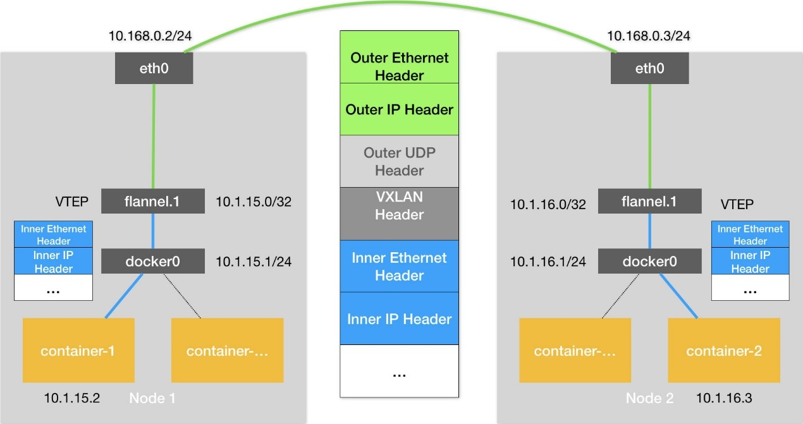
通信流程：每台设备上已经有了VTEP设备（即上图中的flannel.1 的设备）和相应的路由规则
- 源容器发出请求后，数据包包含了源容器ip和目的容器ip；
- 数据包通过虚拟网卡对出现在docker0网桥上，然后根据路由规则到达VTEP设备，要发往的网关地址为目的VTEP设备的ip；
- VTEP会从ARP表里获取到对应的MAC地址，并进行二层封包，得到一个二层数据帧，称为“内部数据帧”；
- Linux 内核会在“内部数据帧”前面，加上一个特殊的 VXLAN 头；
- Linux 内核会从FDB数据库里读取到对应的目的宿主机ip，把“内部数据帧”和目的宿主机ip封装进一个 UDP 包里，称为“外部数据帧”；
- Linux内核会在这个“外部数据帧”前面加上目的宿主机的MAC地址；
- 源宿主机上的 flannel.1 设备就可以把这个数据帧从源宿主机的 eth0 网卡发出去，到目的宿主机的 eth0 网卡；
- 目的宿主机的内核网络栈会发现这个数据帧里有 VXLAN Header，并且 VNI=1；
- 目的宿主机的Linux 内核会对它进行拆包，拿到里面的内部数据帧，然后根据 VNI 的值，把它交给 flannel.1 设备；
- flannel.1 设备则会进一步拆包，取出“原始 IP 包”，然后根据路由规则，将它交给docker0网桥。
HOST_GW
将每个 Flannel 子网的“下一跳”，设置成了该子网对应的宿主机的 IP 地址。
- 主机”（Host）会充当这条容器通信路径里的“网关”（Gateway）;
- flanneld会在宿主机上创建相应的路由规则，设置到某一目的网段的的数据包，应该经过本机的 eth0 设备发出去，且下一跳地址是目的主机ip。
- Flannel 子网和主机的信息，都是保存在 Etcd 当中，flanneld 只需要 WACTH 这些数据的变化，然后实时更新路由表即可；
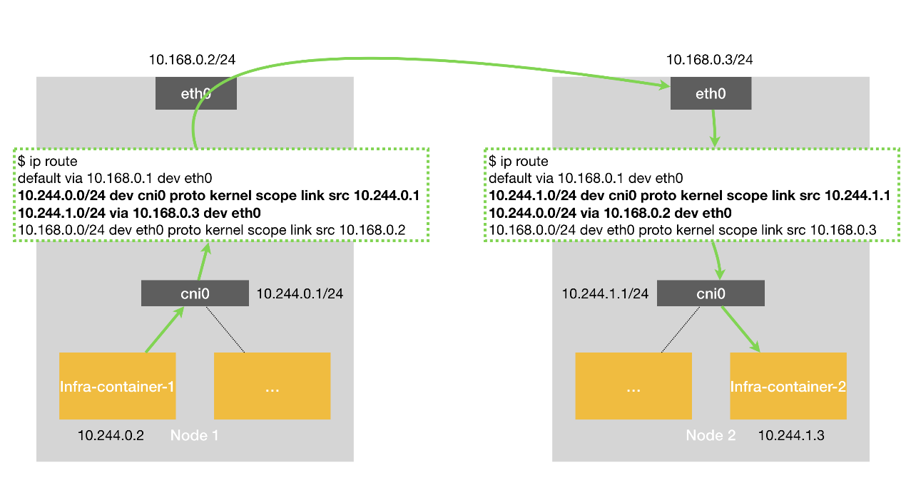
容器通信的过程就免除了额外的封包和解包带来的性能损耗。
- 根据实际的测试，host-gw 的性能损失大约在 10% 左右，而其他所有基于 VXLAN“隧道”机制的网络方案，性能损失都在 20%~30% 左右。
Calico 网络模型
其解决方案跟 Flannel 的 host-gw 模式几乎完全一样：
- 每台宿主机添加一条格式如下的路由规则：网关的ip地址是目的容器所在的ip地址；
-
不会在宿主机创建任何网桥设备；
-
但采用 BGP 自动在集群中分发路由消息，而不是采用 etcd + flanneld 维护路由信息；
BGP（border gateway protocol）：边界网关协议，Linux 内核原生支持、专门用于大规模数据中心维护不同“自治系统”之间路由信息的无中心的路由协议。
Calico 组成：
-
calico/node（作为DaemonSet）是一个由两个容器组成的Pod -
Felix（守护进程）：负责在宿主机插入路由规则（写入Linux内核的FIB转发信息库），维护Calico所需的网络设备；
-
BIRD（守护进程）：BGP的客户端，负责在集群总分发路由规则信息；
-
CNI 插件：与 K8s 对接；
-
使用 Kubernetes API 服务器作为分布式数据存储，消除了构建和维护etcd数据存储的需要。
BGP 模式
修改 calico.yaml 部署文件中的
CALICO_IPV4POOL_IPIP和CALICO_IPV4POOL_VXLAN值修改成Never，则切换到BGP网络。
- 确保所有物理节点在同一个二层网络；
Calico的CNI插件为每个容器设置一个 Veth Pair 设备，一端放在宿主机上（以cali为前缀）：
-
在宿主机上为每个容器的Veth Pair设置配置一条路由规则（未采用网桥），用于接收传入的IP包；
-
发往 10.233.2.3 的 IP 包应该进入cali5863f3 设备
全互联模式：一个 BGP Speaker 需要与其它所有的 BGP Speaker 建立 bgp 连接（形成一个bgp mesh），复杂度 O(N^2)
- 用于少于 100 个节点的集群；
RR 模式：选择一部分节点（一个或者多个）作为 Global BGP Peer，它们和所有的其他节点互联来交换路由信息，其他的节点只和 Global BGP Peer 相连。
- 复杂度 O(N)
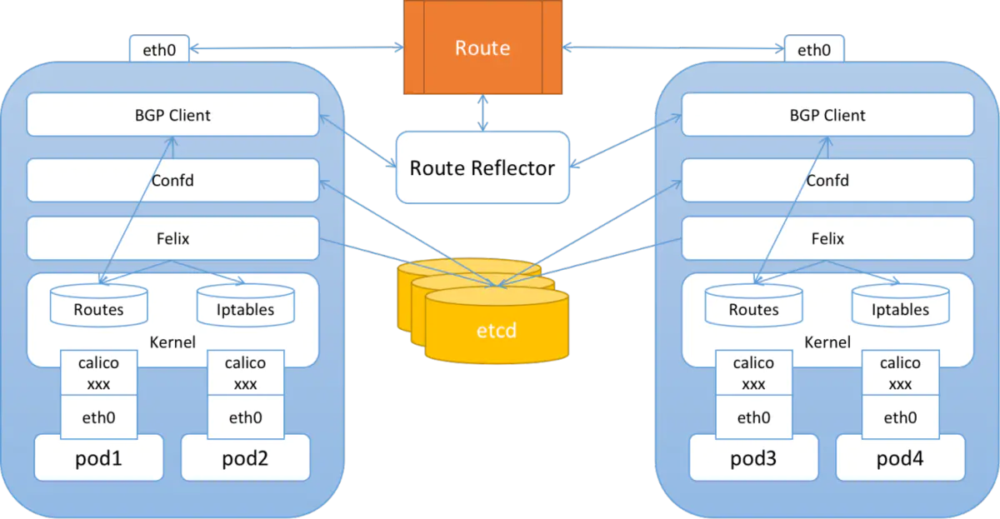
IPIP模式（默认）
IPIP的包头非常小，而且也是内置在内核中，因此理论上它的速度要比VxLAN快一点，但安全性更差。
Calico 3.x的默认配置使用的是 IPIP 类型的传输方案而非BGP。
CALICO_IPV4POOL_IPIP 的值，可用值如下：(CALICO_IPV4POOL_VXLAN 可替代 IPIP 模式)
- Always：只使用 IPIP 隧道网络，默认值
- Never：不使用 IPIP 隧道网络
- CrossSubnet：启用混合网络模式
假设两台处于不同子网的宿主机 Node 1 和 Node 2，对应 IP 分别为 102.168.1.1 和 192.168.2.1，通过路由器实现三层转发（可互相通信）：
-
Calico 尝试在 Node 1 添加如下一条规则：
-
Node 2 和 Node 1 不在一个子网里，无法通过二层网络将 IP 包发送给下一跳地址；
-
开启 IPIP 模式，路由规则变更如下
-
tunl0 设备是 IP 隧道 设备，需要额外的封包/解包，三层转发，性能与 Flannel VXLAN 相当；
- IPIP隧道网络也是依赖BGP来维护节点的路由信息（
ip r可查看相关的信息）；
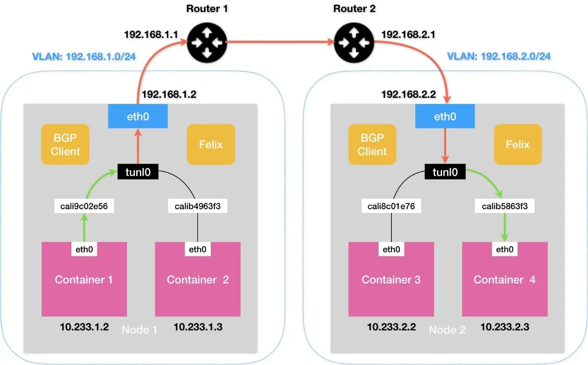
- 或设法将宿主机网关也加入 BGP Mesh 从而避免使用 IPIP
- 使用一个或多个独立组件负责搜集整个集群里的所有路由信息，然后通过 BGP 协议同步给网关；
kube-router
等价于 calico + kube-proxy。
采用了三层路由（Layer 3 Routing）的方式，以实现Kubernetes集群中的网络通信。
Service到Pod的通信
Service在Pod之间起「服务代理」的作用，对外表现为一个单一访问接口，将请求转发给Pod。
$ kubectl decsribe service myservice
Name: myservice
Namespace: default
Lables: <none>
Selector: name=mypod
Type: ClusterIP
IP: 10.254.206.220
Port: http 80/TCP
Endpoints: 10.0.62.87:80,10.0.62.88:80,10.0.62.89:80
Session Affinity: None
No evevts.
解读如下：
- Service的虚拟IP是 10.254.206.220
- 端口80/TCP对应3个后端：10.0.62.87:80,10.0.62.88:80,10.0.62.89:80
- 请求 10.254.206.220:80 时会转发到这些后端之一
- 虚拟IP是K8s创建的，虚拟网段是API server启动参数
--service-cluster-ip-range=10.254.0.0/16配置的
br_netfilter
br_netfilter作用：br_netfilter模块可以使 iptables 规则可以在 Linux Bridges 上面工作，用于将桥接的流量转发至iptables链。
-
如果没加载，影响同node内的pod之间通过service来通信；
-
因为iptables是在三层的，而linux bridge是在二层的。当pod发出的流量经过service来转发后是到同一个node上的pod，那么此时两个pod都是桥接在cni网桥上的，那么就会直接通过网桥来传递流量，但是此时流量的处理就不会up call到三层的iptables规则，从而导致转发异常；
启用 bridge-nf-call-iptables 这个内核参数 (置为 1)，表示 bridge 设备在二层转发时也去调用 iptables 配置的三层规则 (包含 conntrack)
-
每个 Pod 的网卡都是 veth 设备，veth pair 的另一端连上宿主机上的网桥；
-
由于网桥是虚拟的二层设备，同节点的 Pod 之间通信直接走二层转发，跨节点通信才会经过宿主机 eth0；
不管是 iptables 还是 ipvs 转发模式，Kubernetes 中访问 Service 都会进行 DNAT，将原本访问 ClusterIP:Port 的数据包 DNAT 成 Service 的某个 Endpoint (PodIP:Port)，然后内核将连接信息插入 conntrack 表以记录连接，目的端回包的时候内核从 conntrack 表匹配连接并反向 NAT，这样原路返回形成一个完整的连接链路:
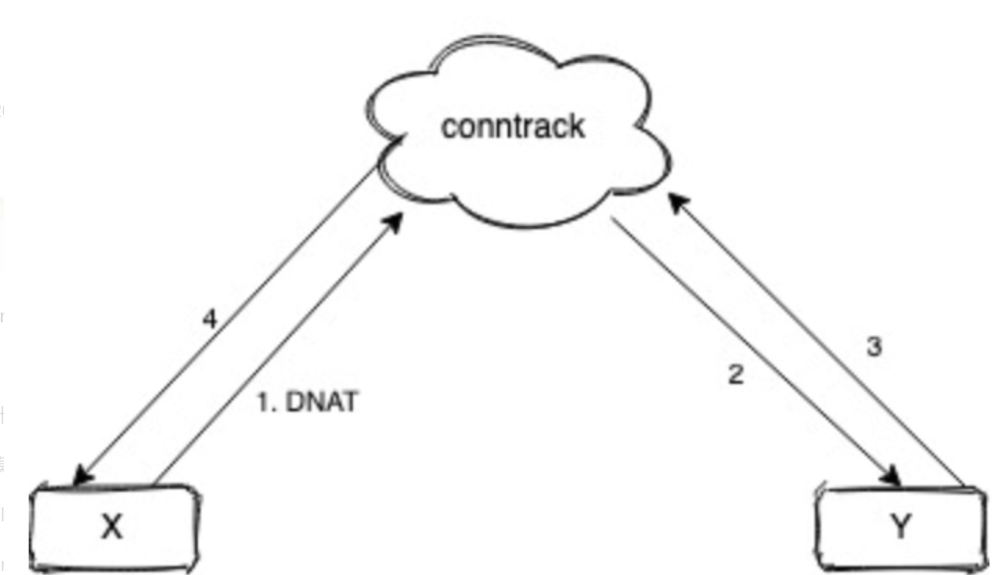
导致问题：（常见的问题现象就是偶现 DNS 解析失败）
1、Pod 访问 Service，目的 IP 是 Cluster IP，不是网桥内的地址，走三层转发，会被 DNAT 成 PodIP:Port； 2、如果 DNAT 后是转发到了同节点上的 Pod，目的 Pod 回包时发现目的 IP 在同一网桥上，就直接走二层转发，没有调用 conntrack，导致回包时没有原路返回，客户端与服务端的通信就不在一个 “频道” 上，不认为处在同一个连接，也就无法正常通信。
kube-proxy
kube-proxy组件负责虚拟IP路由和转发，在容器覆盖网络之上实现的虚拟转发网络，功能如下：
- 监控Service和Endpoints的变化，实现刷新转发规则
- 提供负载均衡能力
kube-proxy的代理模式：~~userspace模式不再推荐~~
iptables模式：设置iptables规则，效率高，但失败响应不友好，可以通过Pod的readinessprobe控制只有ready状态的pod可以响应；-
大量Pod时在宿主机设置相当多的 iptables 规则，大量占用宿主机 CPU 资源；
-
ipvs模式：通过Linux kernel的netlink接口设置IPVS规则，转发效率和吞吐量都是最高； - 要求Linux Kernel启用 IPVS 模块，未启用会自动切换到iptables模式；
- 不需要设置 iptables 规则，而是将规则的处理放在内核态；
- 支持更多负载均衡模式：rr（轮询），lc（最小连接数），dh（目标地址hash），sh（源地址hash），sed（最短期望延迟），nq（永不排队）
kernelspace模式：Windows Server的代理模式；
iptables
完全通过创建iptables规则，直接重定向访问Service的虚拟IP的请求到endpoints;当Endpoints发生变化的时候，kube-proxy会刷新相关的iptables规则，在此模式下，kube-proxy只负责监控Service和Endpoints，更新iptables规则，报文的转发依赖于Linux内核，默认的负载均衡方式是随机方式。
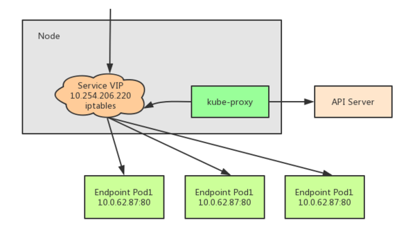
查询关于Service myservice的iptables规则
kube-proxy会为Service创建一系列iptables规则，其中包含iptables自定义链：
- KUBE-SERVICES: 绑定在NAT表PREROUTING链和OUTPUT链
- KUBE-SVC-*: 代表一个Service , 绑定在KUBE-SERVICES
- KUBE-SEP-: 代表Endpoints的每一个后端，绑定在KUBE-SVC-
查询转发规则
网络隔离（NetworkPolicy）
calico 默认支持， flannel 不支持。
- 通过 iptables 实现隔离
配置：（白名单机制）
spec.PodSelector：作用于的Pod，如果为{}，则表示为所有pod；spec.policyTypes：Ingress(入所选 Pod 的入口流量)，Egress（来自所选 Pod的出口流量）；spec.ingress：允许的白名单from：允许的访问所选Pod的来源，支持 IP，Namespace 和 Pod；ports：允许访问所选Pod的端口；spec.egress：允许的白名单to：允许所选Pod所访问的目标，支持 IP，Namespace 和 Pod；ports：允许访问目标的端口
apiVersion: networking.k8s.io/v1
kind: NetworkPolicy
metadata:
name: test-network-policy
namespace: default
spec:
podSelector:
matchLabels:
role: db
policyTypes:
- Ingress
- Egress
ingress:
- from:
- ipBlock:
cidr: 172.17.0.0/16
except:
- 172.17.1.0/24
- namespaceSelector:
matchLabels:
project: myproject
- podSelector:
matchLabels:
role: frontend
ports:
- protocol: TCP
port: 6379
egress:
- to:
- ipBlock:
cidr: 10.0.0.0/24
ports:
- protocol: TCP
port: 5978
多容器多网络方案
当一个应用或服务既需要对外提供 API 调用服务，也需要满足自身基于分布式特性产生的数据同步（一些业务场景的控制面和数据面的分离场景），那么这时候一张网卡的性能显然很难达到生产级别的要求，网络流量延时、阻塞便成为此应用的一项瓶颈。
multus-cni
Multus CNI enables attaching multiple network interfaces to pods in Kubernetes.
Multus CNI 本身不提供网络配置功能，它是通过用其他满足 CNI 规范的插件进行容器的网络配置。